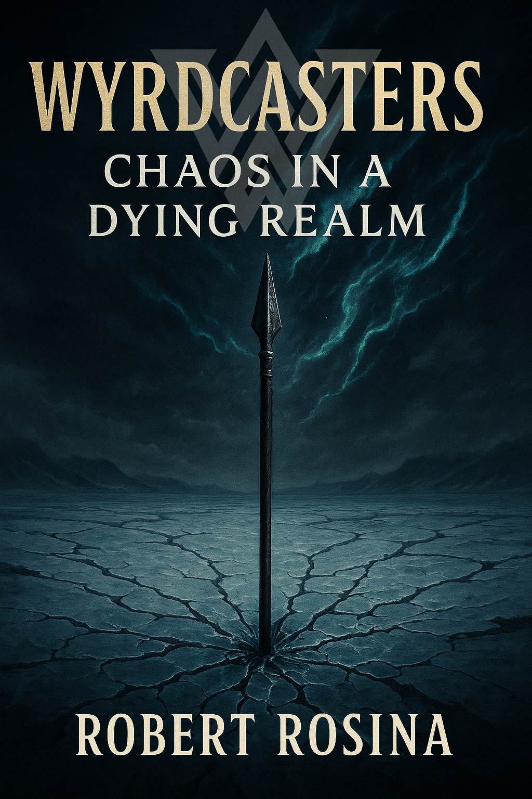

In the tradition of The Lord of the Rings, Dune, and the Cthulhu Mythos, Wyrdcasters is a fantasy universe developed through literature, music, mythology, film, and scholarly research, inspired by Norse and Indo-European mythology.
Inspired by Norse mythology and shaped through visions experienced during a profound break from ordinary reality, The Saga of the Wyrdcasters forms the spine of a larger mythic universe. After nearly a decade spent crafting the cosmology, histories, and spiritual laws of its world, Robert left a career in corporate law to give voice to the vision that had taken root within him. Rather than offering a strict retelling of myth, the saga extrapolates from the Eddas, imagining a world where the Norse gods were real — evolved and advanced beings whose stories were distorted by the limitations of ancient understanding. At its heart, the epic explores spiritual evolution and inner decay, tracing the descent of complex characters as they navigate madness, metaphysics, and the unraveling of a collapsing spiritual cosmos as it spirals toward Ragnarok.
Wyrdcasters: Chaos in a Dying Realm
The first novel in the Wyrdcasters saga, releasing late 2025.
Discover the secret origins of the Norse gods in Wyrdcasters: Chaos in a Dying Realm — the debut installment in the imaginative sci-fi/fantasy epic.
The ancient world of Heim stands on the brink of collapse: frost monsters spread like an icy plague across a corrupted, frozen land; invaders and rival nations press from without, while traitors plot from within — all as mysterious forces lurking in the shadows attempt to manipulate the fate of the universe. Amidst this turmoil, the dormant powers of the young god-to-be Odin awaken — and he is cast into exile. To prevent his world from descending into chaos, Odin and his allies must rally the legends of Norse mythology — the Wyrdcasters — whose combined might just may be enough to halt Heim’s descent into madness and ruin.
The Wyrdcasters project extends beyond storytelling into a deeper exploration of mythology, symbolism, sanity, and metaphysical traditions. Through original research, video essays, and commentary, it seeks to uncover the forgotten foundations of mythic storytelling — and the cosmic architectures that shape the Wyrdcasters universe.
Recent Publications
Studies examining the intersections of myth, sanity, and metaphysical traditions.
YouTube Channel
The Wyrdcasters YouTube channel explores mythology, symbolism, metaphysics, and in-world lore. Through video essays and commentary in series like The Arcane Archive and The Lore Library, it unveils the hidden frameworks of ancient myths and the larger metaphysical currents running through the saga.
The music of Wyrdcasters offers a sonic gateway into the mythic realm of madness, myth, and metaphysics. It extends the mythos into music through an epic journey across cinematic orchestration, dark ambient landscapes, and mythic progressive compositions — sometimes all at once. Each piece is a chapter evoking the dark and powerful transcendence at the heart of the Wyrdcasters universe.
Wyrdcasters: Chaos in a Dying Realm - Soundtrack
A haunting musical companion to the first installment of the Wyrdcasters saga.

Each chapter of Wyrdcasters: Chaos in a Dying Realm is paired with a musical cue from this accompanying soundtrack, capturing its feeling, essence, and metaphysical undercurrents. In essence, the album extends the mythos into sound, offering a cinematic experience that mirrors the emotional arc of the saga. Blending orchestral grandeur, ancient folk textures, dark ambient dreamscapes, and progressive elements, the soundtrack deepens the listener's connection to the Wyrdcasters universe by experiencing it through music.
Listen to a Sample

Mythopoeist
Crafting mythology through literature, music, education, and research
In the tradition of authors J.R.R. Tolkien and C.S. Lewis, Robert is a mythopoeist developing mythology through literature, music, education, and research. He is the creator of Wyrdcasters, a multidisciplinary universe exploring the intersections of mythology, madness, and metaphysics across multiple creative and scholarly disciplines.
Robert’s interdisciplinary approach incorporates literary theory, comparative mythology, film and music theory, and legal analysis, with additional engagement in anthropology and ancient history. His academic interests include the relationship between fiction and mythology, the study of classical languages (Old Norse, Latin), and legal traditions such as oaths, divine justice, and sacred legal codes.
Admitted to the Supreme Court of New South Wales, Robert holds a Juris Doctor with Distinction from Macquarie University, where he received the Highest Achiever award in both the Alternative Dispute Resolution and Health Law units. He also has a strong interest in film, particularly formalist and symbolic cinema, and holds a Bachelor of Media in Screen Practice and Production with Distinction, a background that informs his understanding of visual storytelling and narrative construction He is undertaking advanced studies in writing at the University of Sydney.
Robert is available for invited talks, interviews, and collaborations on mythology, narrative development, and the construction of mythic storytelling across literature, music, film, and cultural tradition.
Merchandise
Wearable art, symbolic designs, and mythic relics drawn from Norse and Indo-European mythology — and from the heart of the Wyrdcasters universe. Explore mythic apparel, collectables, posters, and artifacts crafted to embody the ancient and the arcane.
Support the Mythos
Help sustain the Wyrdcasters universe:
Upcoming live appearances, performances, and signings.